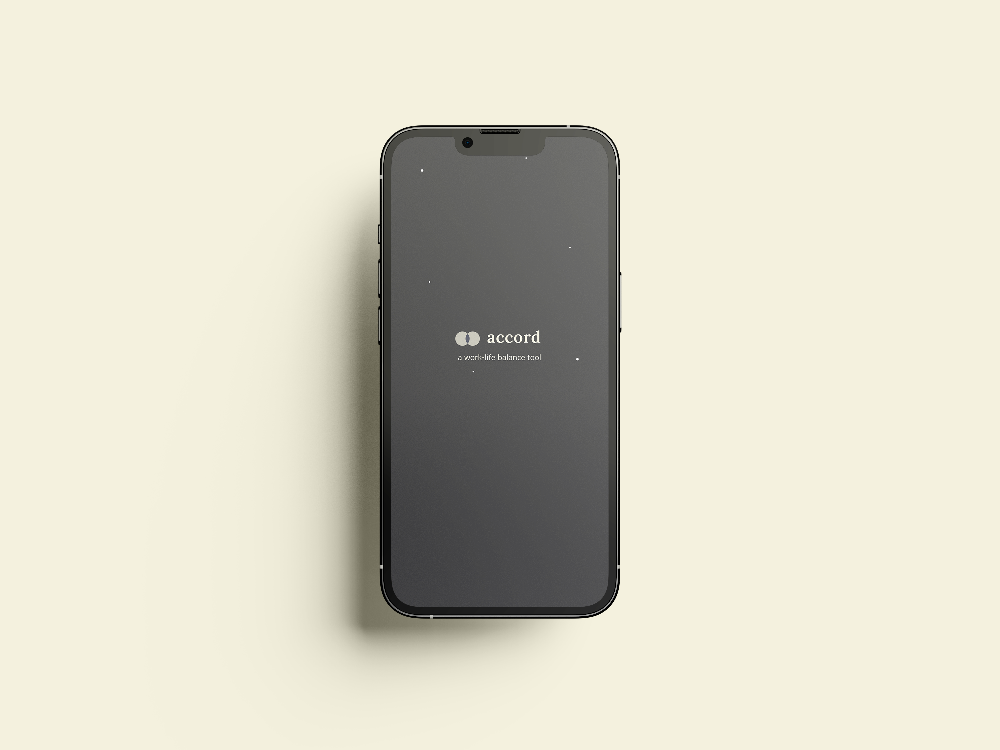
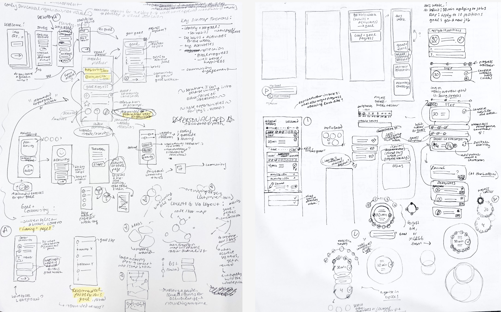

Home
Next
Visit Prototype
Accord
Interaction Design & Branding
Accord is a digital to–do list centered around work–life balance. In contrast to other wellness and productivity tools, Accord's design considers users' lives holistically. It suggests personalized activities for a happier life — such as reaching out to an old friend — alongside reflecting on goals or scheduled work time. Users can adjust their recommendations with a "work–life slider" and compare their progress towards goals across their work, social relationships, and habits for health and mindfulness. Accord's visual design reflects this holistic vision. The planetary visual theme of the app reflects each user's internal world, with each person orbited by many different aspects of their lives.
Over four months of user research, I narrowed the focus of Accord's design to target three specific problem areas faced by its users: breaking long–term goals down into accomplishable steps, developing happiness and well–being in the present, and balancing work and personal life. A refreshing list of recommendations allows users to focus less on streaks and artificial measurements of productivity and more on how completing these recommendations makes them feel over time. Accord's recommendations also draw from research by Yale professor Dr. Laurie Santos, who teaches a course on happiness and well–being. Presenting activities to users in a familiar to–do list format applies the satisfying feeling of crossing off a to–do to activities that Dr. Santos recommends for boosting overall happiness.

When launched, users input information about themselves and their goals. Accord interprets this information to provide them with a personalized experience.
Users must choose two main goals to prioritize in Accord. One is lifestyle-oriented, including social relationships, healthy lifestyle choices, or developing mindfulness. All three of these areas have been demonstrated to improve quality of life. The other goal is custom–set by the user.
Accord generates a list of weekly tasks based on users' goals. Users may adjust these recommendations by deleting or liking tasks according to their preferences.
Tasks are a mix between lifestyle–oriented goals and a personal goal, such as a professional aspiration, set by the user.
Users can track progress towards their goals across different areas of their life, including Social Relationships, Healthy Lifestyle, Mindful Living, or a custom goal of their choice.
Accord's brand identity reflects the intersecting elements of people's lives and goals. Planets orbiting the sun mimick aspects of the user's life, with them at the center.
Research & Context
Initial user research demonstrated that the goal–oriented target user struggles in two main areas: breaking big goals down into smaller steps, and dedicating time to their happiness and wellbeing. Based on this synthesis, I identified an opportunity to design a tool that encourages balance in users' lives.


Research Examples: User Interviews, Dr. Santos's Course on Happiness & Wellbeing

Initial Ideation Examples: Designing a tool that draws inspiration from "productivity apps" without glorifying productivity
Lo-fi Prototype Examples

© Sasha Kostenko 2024. Website developed by Sasha Kostenko. alexandrakostenko5@gmail.com